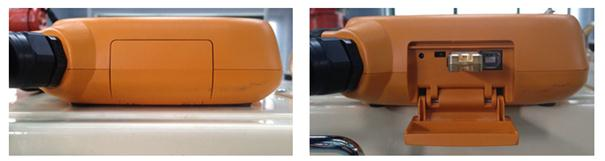
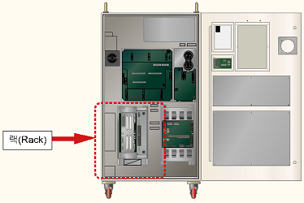

경고(Warning)
이전 작업 프로그램을 보호하기 위해서 보드를 랙에서 제거하기 전에 반드시 메인보드의 모든 파일을 USB 메모리를 이용하여 백업하시기 바랍니다.
기존 에러코드: E0122 서보ON 제한시간 초과
1.1.81.1. 개요
메인에서 서보에 모터 ON 지령을 보냈는데도 서보가 모터 ON 되지 않는 경우에 발생합니다.
메인과 서보간의 통신에 문제가 있을 경우에 발생할 수 있습니다.
메인에서 서보에 모터 ON을 보내기 직전에 서보에러 clear 지령을 보내고 서보에러가 clear되면 모터 ON 지령을 보냅니다. 서보에러가 clear되지 않으면 해당 서보에러가 다시 나타나기 때문에 모터 ON 지령이 출력되지 않습니다. 따라서 메인과 서보간 통신 문제만 아니라면 정상적인 모터 ON이 되거나 다른 서보 에러가 발생됩니다.
1.1.81.2. 원인 및 점검방법
|
(1) 메인보드와 서보보드가 올바로 설치되어 있는지 점검하십시오. n 보드가 올바르게 설치되어 있는지 점검하십시오. n 보드 이상여부를 점검하십시오. |
(1) 메인보드와 서보보드가 올바르게 설치되어 있는지 점검하십시오.
메인보드와 서보보드가 랙에 올바로 설치되어 있지 않거나 보드에 문제가 있으면 통신에 문제가 되어 에러가 발생할 수 있습니다.
|
경고(Warning) 이전 작업 프로그램을 보호하기 위해서 보드를 랙에서 제거하기 전에 반드시 메인보드의 모든 파일을 USB 메모리를 이용하여 백업하시기 바랍니다. |
USB 메모리에 메인보드 파일을 백업하는 방법은 다음과 같습니다.
(a) TP520

(b) TP511
그림 1.214 티칭펜던트에 USB를 삽입하는 방법
USB가 TP에서 인식되면 화면 위에 다음과 같은 아이콘으로 표시됩니다.
파일을 백업하기 위해서,
Ø 서비스
Ø 5. 파일관리
로 들어가면 윈도우에서 탐색기와 같은 화면이 보여집니다.
여기서 M/B에 보여지는 파일을 복사하여 USB에 넣으시면 됩니다.
USB에 윈도우 탐색기와 같이 새 폴더를 만들 수도 있으며, 소프트키보드를 사용하여 폴더 이름을 변경할 수 도 있습니다.
n 보드가 올바르게 설치되어 있는지 점검하십시오.
메인보드와 서보보드를 랙에서 제거한 후 다시 설치하시기 바랍니다.

(a) Hi5a-S 제어기

(b) Hi5a-N 제어기
그림 1.215 제어기 내부 랙(Rack) 위치
n 보드 이상여부를 점검하십시오.
보드 이상 여부를 판단하기 위해서 보드 교체를 하시기 바랍니다.